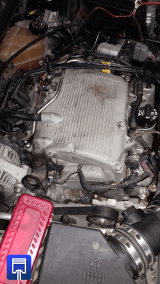
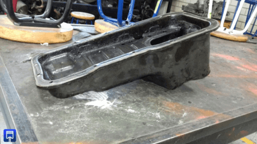

-
Definición.
Un motor es una maquina con la cual se puede brindar energía para obtener un trabajo mecánico.
-
Principios.
A inicios de que los primeros vehículos comenzaran a circular por las calles, los motores eran muy distintos lo que conocemos actualmente pues estos eran impulsados por vapor, mientras que los motores de combustión comenzaron a surgir a partir del siglo XIX, con la producción comercial de petróleo.
El primer automóvil con motor de combustión interno registrado es el que presento Carl Benz el 29 de enero de 1886. -
Elementos básicos.
El motor del vehículo está constituido por muchos componentes los cuales cumplen un fin específico pero las partes principales de un motor son tres pues en estas se alojan o se acoplan más componentes.
Cabeza de motor o también conocido como culata, este componente se encuentra en la parte superior del motor, algunas funciones de las que se encarga son alojar componentes como las válvulas de admisión y escape, formar en conjunto con el monobloc, la cámara de combustión. En algunos casos también el árbol de levas se encuentra en la cabeza de motor.

EL monoblock este es el componente principal ya que dentro se encuentran los cilindros, pistones, bielas, cigüeñal y la cámara de combustión. Dentro de monoblock están los pistones que se mueven de forma ascendente y descendente dentro del cilindro de donde se obtiene la energía para que el vehículo se pueda deslizar.

Comúnmente es fabricado en aluminio el carter esta es la zona más baja del motor, en este componente se almacena todo el aceite que circula por el motor, además de que es un deposito donde quedan atrapadas las rebabas generadas por el degaste del motor.

Funcionamiento de cilindros.Los cilindros de motor son los elementos donde se desplazan los pistones con los cuales se obtendrá la fuerza para permitir que el vehículo pueda desplazarse. Los pistones se mueven de manera ascendente y descendente dentro del cilindro. Los pistones recorren la carrera del pistón que va desde el punto muerto superior hasta el punto muerto superior, comúnmente el número de cilindros es utilizado para distinguir diferentes tipos de motores pues van desde los 3 cilindros que son usados en vehículos de uso cotidiano con un bajo consumo de combustible, hasta un 32 cilindros para autos de competencia con un consumo de combustible descomunal.

Cámara de combustiónLa cámara de combustión es el espacio formado entre la cabeza de motor y el monoblock, esta sellada herméticamente mediante una junta universal para evitar el paso de caite o de cualquier otra sustancia al interior de la cámara de combustión. Dentro de la cámara de combustión se lleva a cabo el ciclo OTTO, el cual consta de las siguientes etapas:
- Admisión
- Compresión
- Explosión
- Escape
Durante el ciclo OTTO es utilizado un combustible, el cual es una mezcla de gasolina o diésel, la cual también es conocida como mezcla estequiometriaca, esta mezcla contiene la cantidad correcta de combustible y de aire. La mezcla estequiometria entra en el periodo de tiempo “Admisión”, después el pistón la “comprime”, al subir al punto muerto superior, posteriormente la mezcla es quemada mediante la chispa de una bujía que enciende creando una chispa eléctrica para quemar la mezcla y finalmente el pistón es impulsado al punto muerto inferior, en ese momento es cuando los gases obtenidos por la combustión “Escapan” por una de una de las válvulas que se encuentran dentro de la cámara de combustión.

 Relación de compresión.
Relación de compresión.La relación de compresión para un motor de combustión interna es la cantidad que permite conocer la proporción del volumen que ha sido comprimida la mezcla aire-combustible dentro de la cámara de combustión.
Esta puede ser calcula mediante la formula R_c=(V_Ci+ 〖Vc〗_a)/V_ca
Donde
RC es la relación de compresión
Vci es el volumen del cilindró
Vca es el volumen de la cámara de combustión
Reglajes.Un reglaje es un reajusté que se efectúa a un mecanismo o maquina con el fin de mantener en buen estado su funcionamiento. Para los motores de combustión interna existen reglajes los cuales afectan a los tiempos de admisión, explosión y escape.
El reglaje de admisión
este consiste en regular la velocidad de la válvula de admisión al momento de abrir y cerrarReglaje de explosión
este ajuste consiste en adelantar el instante en que la chispa de la bujía salta para quemar el combustible, esto para que antes de que el pistón se encuentre en el Punto Muerto Superior (PMS) el combustible haya comenzado a quemarse, lográndose así una buena combustión.Reglaje escape
este ajuste lo que implica es que debe de adelantar la apertura de la válvula de escape antes de que el pistón llegue al punto muerto inferior (PMI) y cierre un poco después de que pase por el punto muerto superior (PMS).Orden de detonación.El orden de explosión se refiere al tiempo de combustión en cada cilindro, esto quiere decir que nos indicara que cilindro es el que se encuentra en la fase de combustión.
Conocer este dato es importante pues nos permitirá calibrar válvulas, cambiar tapas del distribuidor, hacer un diagnóstico al motor en caso de presentar alguna falla, etc.
El orden de detonación de cada motor depende del tipo y en algunas ocasiones también de la marca de nuestro vehículo, aunque el más común entre los es el 1-3-4-2.
Motores a dos tiempos.Este tipo de motores tienen algunas ventajas sobre el motor con ciclo convencional, aunque también tiene sus fallas.
El motor de dos tiempos realiza el ciclo OTTO en solo dos carreras del pistón por los que en cada vuelta que da el cigüeñal, hay una explosión dentro de la cámara de combustión. Otra característica es que este tipo de motor no tiene válvulas, en su lugar utiliza ventanas o lumbreras.